A doença de Hailey-Hailey (DHH), também conhecida como pênfigo familiar benigno, é uma genodermatose autossômica dominante, com penetrância variável, rara descrita pela primeira vez em 1939 pelos irmãos Hailey. A DHH é caracterizada pela adesão prejudicada dos queratinócitos, resultando em acantólise intraepidérmica generalizada, não-cicatricial, caracterizada por erosões, bolhas e fissuras em áreas intertriginosas.
Etiopatogenia
Mutações no gene ATP2C1 (cromossomo 3q21-24) levam à disfunção da bomba de cálcio no retículo de Golgi, afetando a homeostase do cálcio intracelular e a adesão entre os queratinócitos. Estudos recentes destacam o papel do estresse oxidativo e da inflamação na piora dos sintomas, sugerindo que fatores ambientais, como infecções, calor, umidade e trauma, podem desencadear ou exacerbar as lesões.
Isto impede o processamento completo de proteínas essenciais à adesão dos ceratinócitos como as caderinas, o que determina ruptura desmossomal e acantólise suprabasal. O conteúdo de Cálcio nos ceratinócitos basais é menor do que na pele normal e a transição da queratina 14 para a 10 está alterada. Diminuição no número de desmossomos tem sido implicado na patogênese do Hailey-Hailey.
Manifestações clínicas
As lesões tem início na segunda ou quarta décadas, desenvolvendo-se em áreas de exposição ao sol como nuca e dorso e em áreas sujeitas à fricção e maceração como virilhas, axilas e áreas submamárias em mulheres. Vesículas flácidas surgem sobre pele eritematosa ou normal, expandindo-se para produzir uma borda circinada. Ao se romperem determinam erosões maceradas, fissuradas ou crostosas. Odor fétido e prurido interferem na vida social do paciente. Lesões vegetantes intertriginosas podem ser idênticas às do pênfigo vegetante. A exacerbação e persistência da doença pode se dever à infecções bacterianas, fúngicas e virais, particularmente pelo vírus do herpes simples que pode determinar uma erupção variceliforme de Kaposi. Leuconíquias longitudinais estão presentes em 71% dos pacientes.
Diagnóstico
O diagnóstico é baseado na história clínica, exame físico e confirmação histopatológica. A biópsia cutânea mostra acantólise (perda de adesão entre os queratinócitos) na epiderme, semelhante ao pênfigo, mas com menor intensidade. A histopatologia mostra vesículas intraepidérmicas suprabasais com células acantolíticas. É característico o aspecto de muro de tijolo dilapidado. Podem ser vistos poucos corpos redondos e grãos, típicos da doença de Darier. A doença de Hailey-Hailey apresenta acantólise em toda a espessura da epiderme com hiperplasia epidérmica e escamas impetiginadas. A acantólise não se estende às partes profundas do folículo como no pênfigo vulgar. A imunofluorescência direta é negativa, excluindo o pênfigo vulgar. Testes genéticos para identificar mutações no gene ATP2C1 podem ser úteis para confirmar o diagnóstico, especialmente em casos atípicos.
Tratamento
O manejo da doença de Hailey-Hailey é desafiador e focado no controle dos sintomas e na prevenção de exacerbações. As abordagens incluem:
Cuidados Gerais: Evitar fatores desencadeantes, como calor, umidade e trauma. Manter a pele seca e usar roupas leves e não aderentes.
Tratamentos Tópicos
Corticosteroides tópicos para reduzir a inflamação.
Antibióticos ou antifúngicos tópicos para tratar infecções secundárias.
Inibidores da calcineurina (tacrolimo ou pimecrolimo) como alternativa aos corticosteroides.
Recentemente, o uso de toxina botulínica tópica tem sido explorado para reduzir a sudorese e melhorar as lesões em áreas de dobras. Considerando que tanto a naltrexona quanto naloxona são antagonistas dos receptores opioides ambos podem ser usados no tratamento da DHH por infusão intravenosa.
Tratamentos Sistêmicos
Antibióticos orais (como tetraciclinas) para controle de infecções e efeito anti-inflamatório.
Retinoides orais (acitretina) para modular a proliferação e diferenciação dos queratinócitos.
Imunossupressores (como corticosteroides orais, ciclosporina ou metotrexato) em casos graves.
Terapias Biológicas:
Relatos recentes sugerem benefício do uso de inibidores de TNF-α (como adalimumabe) e inibidores de IL-17 (como secuquinumabe) em casos refratários.
Terapias com Laser e Cirúrgicas:
Laser de CO2 fracionado ou ablativo para remover áreas afetadas e promover a cicatrização.
Cirurgia para remover áreas cronicamente afetadas, seguida de enxerto de pele.
Pesquisas Recentes:
Estudos estão investigando o papel de novas terapias genéticas, como a edição de genes com CRISPR/Cas9, para corrigir mutações no gene ATP2C1.
Pesquisas sobre o uso de antioxidantes e moduladores da inflamação estão em andamento para abordar o estresse oxidativo e a resposta inflamatória exacerbada.
Apoio ao Paciente:
A doença de Hailey-Hailey pode ter um impacto significativo na qualidade de vida devido à dor, desconforto e constrangimento social. O suporte psicológico e o acompanhamento dermatológico regular são essenciais.
Perspectivas Futuras:
A compreensão dos mecanismos moleculares da doença está abrindo caminho para terapias mais direcionadas e eficazes. Novos tratamentos, como terapias biológicas e genéticas, podem revolucionar o manejo da doença de Hailey-Hailey nos próximos anos.
REFERÊNCIAS BIBLIOGRÁFICAS
1. Botulinum toxin in treating Hailey-Hailey disease: A systematic review. Zhang H, Tang K, Wang Y, Fang R, Sun Q. J Cosmet Dermatol. 2021 May;20(5):1396-1402.
2. Dupilumab in Hailey-Hailey disease: a case series. Alamon-Reig F, Serra-García L, Bosch-Amate X, Riquelme-Mc Loughlin C, Mascaró JM Jr. J Eur Acad Dermatol Venereol. 2022 Oct;36(10):e776-e779.
3. Hailey-Hailey Disease: An Update Review with a Focus on Treatment Data. Ben Lagha I, Ashack K, Khachemoune A. Am J Clin Dermatol. 2020 Feb;21(1):49-68.
4. Hailey-Hailey disease: clinical, diagnostic and therapeutic update.
Porro AM, Arai Seque C, Miyamoto D, Vanderlei Medeiros da Nóbrega D, Simões E Silva Enokihara MM, Giuli Santi C. An Bras Dermatol. 2024 Sep-Oct;99(5):651-661.
5. Hailey-Hailey disease successfully treated with naloxone: 2 case reports and Review of the literature on efficacy of opioid receptor antagonist in Hailey-Hailey disease patients. Zheng J, Duan Z, Xu B, Song H, Wu J, Fang F, Sheng N, Li C. J Dermatolog Treat. 2025 Dec;36(1):2453597.
Atlas de imagens 77

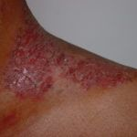

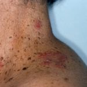

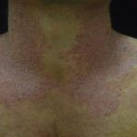

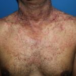

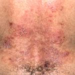

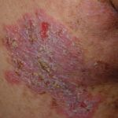

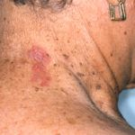


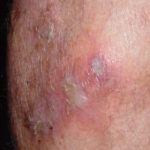

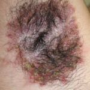

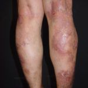

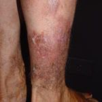

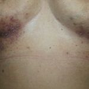

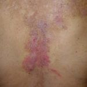

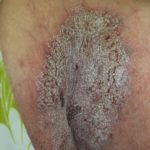

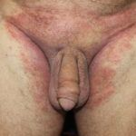

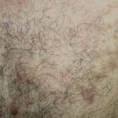

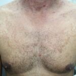

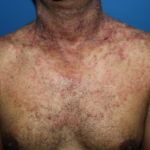

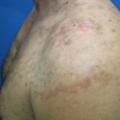

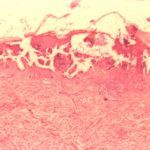

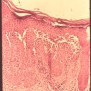

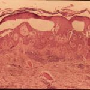


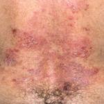

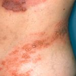

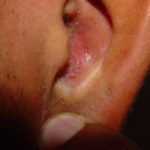

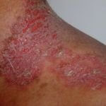

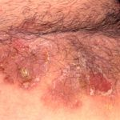

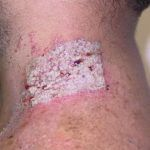

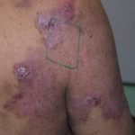


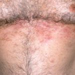

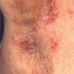

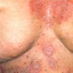

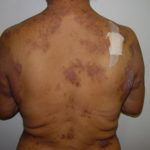

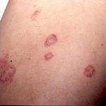

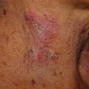

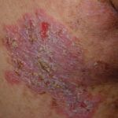

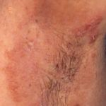

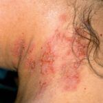

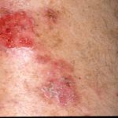

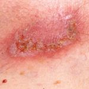

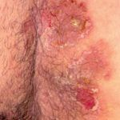

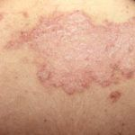

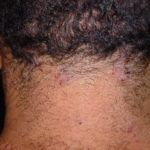


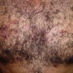


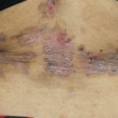

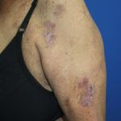

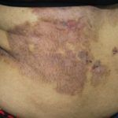

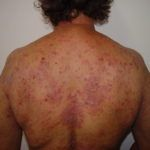

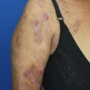

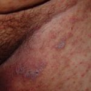